扉页
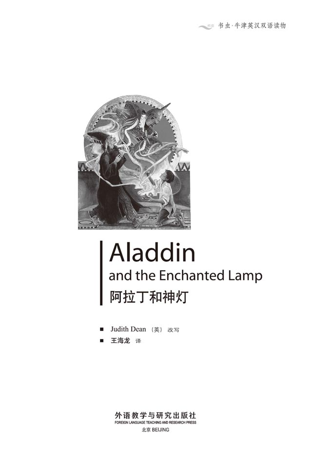
版权页
京权图字：01-2002-6577
Originally published by Oxford University Press, Great Clarendon Street, Oxford. © 2000
This edition is licensed for sale in the People's Republic of China only and not for export therefrom.
'Oxford' is a registered trademark of Oxford University Press.
只限中华人民共和国境内销售，不包括香港特别行政区、澳门特别行政区及台湾省。不得出口。
图书在版编目（CIP）数据
阿拉丁和神灯：英汉对照 ／（英）迪安（Dean, J.）改写；王海龙译．— 北京：外语教学与研究出版社，2003.9（2014.9 重印）
（书虫·牛津英汉双语读物）
书名原文：Aladdin and the Enchanted Lamp
ISBN 978-7-5600-3650-2
Ⅰ．阿… Ⅱ．①迪… ②王… Ⅲ．英语—对照读物，童话—英、汉 Ⅳ．H319.4:I
中国版本图书馆CIP数据核字（2003）第070417号
出版人： 蔡剑峰
责任编辑：易 璐
封面设计：刘 莎
出版发行：外语教学与研究出版社
社 址：北京市西三环北路19号（100089）
网 址：http://www.fltrp.com
版 次：2003年9月第1版
书 号：ISBN 978-7-5600-3650-2
* * *
凡侵权、盗版书籍线索，请联系我社法律事务部
举报电话：(010)88817519 电子邮箱：banquan@fltrp.com
法律顾问：立方律师事务所 刘旭东律师
中咨律师事务所 殷 斌律师
内容简介
内容简介
阿拉丁是一个懒惰的孩子。他不喜欢劳动，成天和朋友们在市场上玩耍。他和母亲都很穷，经常挨饿。但阿拉丁从来都不工作，也不帮助他的母亲。
有一天，阿拉丁的叔叔阿巴那扎尔来到这个城市。“我很有钱。”他跟阿拉丁和他母亲说。他给了他们一些金子，给阿拉丁买了一件漂亮的新外套，还说想继续帮助他们。阿拉丁非常高兴。
但其实阿巴那扎尔并不是阿拉丁的叔叔。他是来自摩洛哥的一位魔法师，他想找到一盏神灯。他知道那盏灯在一个阿拉伯城市附近的一座神奇的地下花园里，只有这个城市里的一个穷孩子能进入花园找到那盏神灯，这个男孩的名字叫阿拉丁。
ALADDIN AND THE ENCHANTED LAMP
ALADDIN
AND THE ENCHANTED LAMP
Aladdin is a lazy boy. He does not like work and he plays all day with his friends in the market. He and his mother are very poor, and are often hungry, but Aladdin never works, and never helps his mother.
One day Aladdin's uncle, Abanazar, arrives in the city. 'I am a rich man,' he tells Aladdin and his mother. He gives them gold, buys Aladdin a beautiful new coat, and wants to help them. Aladdin is very happy.
But Abanazar is not Aladdin's uncle. He is a magician from Morocco, and he wants to find an enchanted lamp. He knows the lamp is in a magical garden under the ground, near a city in Arabia. Only a poor boy from the city can get into the garden and find the lamp. And that boy's name is Aladdin...
目录
1. Help from a rich man
1
Help from a rich man
Many years ago, in a city in Arabia, there was a boy called Aladdin. He lived with his mother in a little house near the market, and they were very poor. Aladdin's mother worked all day, and sometimes half the night, but Aladdin never helped her.
He was a lazy boy and he did not like to work. He only wanted to play all the time. Every morning he ran through the streets to the market. There, he talked and laughed and played with his friends all day. Then in the evening he went home for his dinner.
And every night his mother said to him: 'Oh, Aladdin, Aladdin! You are a lazy boy — a good-for-nothing! When are you going to do some work, my son?'
But Aladdin never listened to his mother.
One day in the market there was an old man in a long black coat. Aladdin did not see him, but the old man watched Aladdin very carefully. After some minutes he went up to an orange-seller and asked:
'That boy in the green coat — who is he?'
'Aladdin, son of Mustafa,' was the answer.
The old man moved away. 'Yes,' he said quietly. 'Yes, that is the boy. The right name, and the right father.'
Then he called out to Aladdin: 'Boy! Come here for a minute. Is your name Aladdin? Aladdin, son of Mustafa?'
Aladdin left his friends and came to the old man. 'Yes,' he said, 'I am Aladdin, son of Mustafa. But my father is dead. He died five years ago.'
'Dead!'said the old man.'Oh, no!'He put his face in his hands and began to cry.
'Why are you crying?' asked Aladdin. 'Did you know my father?'
The old man looked up. 'Mustafa was my brother!' he said. 'I wanted to see him again, and now you tell me he is dead. Oh, this is not a happy day for me!' Then he put his hand on Aladdin's arm. 'But here is my brother's son, and I can see Mustafa in your face, my boy. Aladdin, I am your uncle, Abanazar.'
'My uncle?' said Aladdin. He was very surprised. 'Did my father have a brother? I didn't know that.'
'I went away before you were born, my boy,' said the old man. 'Look.' He took ten pieces of gold out of his bag, and put them into Aladdin's hands. 'Go home to your mother and give this money to her. Tell her about me, and say this:"Her husband's brother wants to meet her, and he is going to visit her tomorrow."'
Ten pieces of gold is a lot of money and Aladdin was very happy. He ran home quickly and gave the gold to his mother. At first she was afraid.
'Where did you get this, Aladdin? Did you find it? It isn't our money. You must give it back.'
'But it is our money, Mother,' said Aladdin. 'My uncle, my father's brother, gave the money to us. Uncle Abanazar is coming to visit us tomorrow.'
'Who? You don't have an uncle Abanazar.'
'But he knows my name, and my father's name,' Aladdin said. 'And he gave ten pieces of gold to me. He's very nice. You must make a good dinner for him.'
The next day Abanazar arrived at Aladdin's house.
'My sister!' he said and smiled. 'My dead brother's wife! I am happy to find you and Aladdin.'
'Sit down, Abanazar. We're happy to see you in our poor home,' Aladdin's mother said. She put meat, rice and fruit on the table. 'But I don't understand. Why did my husband never speak about you?'
'I'm sorry, my sister. When we were young, my brother and I were not friends for many years. Then I went away to a far country. I am an old man now and wanted to see my brother again and take his hand. But he is dead, and I cannot speak to him or say goodbye to him now!'
Abanazar had tears in his eyes and Aladdin's mother began to cry too.
'But I am home again now,' the old man said, 'and I can help my brother's wife and his son, because I am a rich man.' He looked at Aladdin. 'Aladdin, my boy, what work do you do?'
Aladdin did not answer and his face was red.
'Oh, don't ask Aladdin questions about work!' his mother said. 'He never works. He plays with his friends all day, and only comes home when he is hungry.'
'Well, my boy, tomorrow we must get a new coat for you. Then we can talk about work. Would you like to have a shop in the market perhaps?'
Aladdin smiled. 'A shop,' he thought, 'and me, a rich market-seller. Why not?'
Arabia n. 阿拉伯（半岛）。
all the time during the whole of the time referred to. 一直，始终。
good-for-nothing n. worthless person. 无用的人，饭桶。
move away leave. 离开，走开。
see vt．perceive with the eyes. 看见，看到。
visit vt．go or come to see. 访问，拜访。
give back return... to its rightful owner. 归还。
arrive at reach a destination. 到达，抵达。
speak about mention; speak of. 提起，说起。
coat outer garment with sleeves; overcoat or jacket. 上衣，外套；大衣。
talk about discuss. 讨论，谈论。
Would you like...? 你想……吗？你希望……吗？
一个富人的帮助
1．一个富人的帮助
很多年以前，在一个阿拉伯城市里，有一个男孩儿叫阿拉丁。他和他的母亲住在市场附近一个很小的屋子里，过着穷苦的日子。阿拉丁的母亲整天都在辛勤地劳作，有时甚至忙碌到深夜，但阿拉丁从来都不帮助她。
他很懒惰，不喜欢劳动，只想整天玩耍。每天早晨他都穿过街道跑到市场上，一整天都和伙伴们在那儿说笑嬉戏，傍晚时分才回家吃饭。
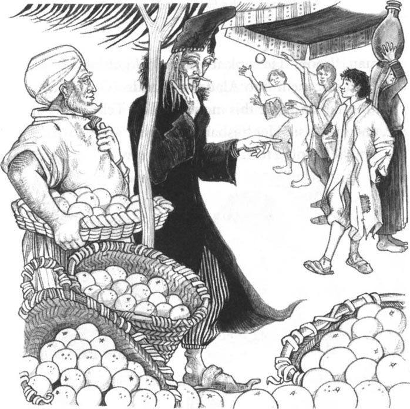
每天晚上他的母亲都对他说：“唉，阿拉丁，阿拉丁！你这个懒惰的孩子——真是没用！你什么时候才能做点儿事呢，儿子？”
但阿拉丁从来都不听母亲的话。
一天，市场上来了一个身穿黑色长袍的老头儿。阿拉丁并没有注意到他，老头儿却在仔细地观察着阿拉丁。过了好一会儿他走到一个卖橘子的摊贩前问道：
“那个穿绿衣服的男孩子——他是谁啊？”
“阿拉丁，穆斯塔法的儿子。”摊贩答道。
老头儿随即走开了。“是的，”他低声地自言自语道，“是的，就是这个男孩儿。就是这个名字，他父亲的名字也对。”
然后他冲阿拉丁喊道：“孩子！过来—下。你是叫阿拉丁吗？阿拉丁，穆斯塔法的儿子？”
阿拉丁离开他的伙伴们来到老头儿面前。“是的，”他说，“我是阿拉丁，穆斯塔法的儿子。但我父亲已经死了，他五年前就死了。”
“死了！”老头儿说，“哦，不！”他用手蒙着脸哭了起来。
“你为什么哭？”阿拉丁问道，“你认识我父亲吗？”
老头儿抬起头来。“穆斯塔法是我的兄弟！”他说，“我很想见到他，却得知他已经死了。哦，对我来说这是多么悲惨的一天啊！”他把手搭在阿拉丁的臂上，“但我兄弟的儿子在这里，我可以从你的脸上看到穆斯塔法的影子，我的孩子。阿拉丁，我是你的叔叔阿巴那扎尔啊。”
“我的叔叔？”阿拉丁很惊讶，“我父亲有个兄弟吗？可我并不知道。”
“在你出生之前我就离开了，我的孩子，”老头儿说道，“拿着。”他从钱袋里拿出10枚金币交到阿拉丁的手中，“回家把这些钱给你母亲，告诉她她丈夫的兄弟想来看她，他明天就会来。”
10枚金币是很大一笔钱，阿拉丁很高兴。他飞快地跑回家中把金币交给母亲。起初她很害怕。
“阿拉丁，你是从哪儿弄来这些钱的？是捡来的吗？这不是我们的钱，你必须还回去。”
“但这确实是我们的钱啊，妈妈，”阿拉丁说，“这是我叔叔、我父亲的兄弟给咱们的钱。阿巴那扎尔叔叔明天会来看咱们。”
“谁？你没有一个叫阿巴那扎尔的叔叔啊。”
“但他知道我的名字，也知道我父亲的名字，”阿拉丁说，“他给了我10枚金币。他是一个非常好的人。你要好好地给他做顿饭。”
第二天阿巴那扎尔来到阿拉丁的家中。
“我的嫂子！”他微笑道，“我死去的兄弟的妻子！我很高兴能找到你和阿拉丁。”
“快请坐，阿巴那扎尔。很高兴在我们的寒舍见到你，”阿拉丁的母亲说。她把肉、米饭和水果摆上桌。“但我还是不明白，我丈夫怎么从来都没有提起过你呢？”

“我很惭愧，嫂子。我们都还年轻的时候，我和我兄弟的关系有很多年都不是很好。后来我就离家去了一个遥远的国度。现在我老了，想再见到我的兄弟，跟他和好。但他已辞世，我不能和他说话，也不能和他说再见了！”
阿巴那扎尔眼含热泪，阿拉丁的母亲也哭了起来。
“但我现在回家了，”老头儿说，“我可以帮助我兄弟的妻子和儿子，因为我很有钱。”他转过头看着阿拉丁，“阿拉丁，我的孩子，你现在做什么工作呢？”
阿拉丁没有回答，脸涨得通红。
“哦，不要问阿拉丁工作的事！”他母亲说，“他从来都不工作，整天在外面跟他那些朋友们玩耍，只有饿了的时候才回家。”
“好了，我的孩子，明天我得给你买件新外套，然后我们再谈谈工作。也许你想在市场上拥有一家店铺？”
阿拉丁笑了。“一家店铺，”他暗自想道，“我会成为一个富有的店主。为什么不呢？”
2. A walk to nowhere
2
A walk to nowhere
Early the next morning, Abanazar arrived at Aladdin's house and then he and Aladdin walked to the market.
'First of all we must look at coats,' Abanazar said.
Soon Aladdin had an expensive new coat and he felt very happy. Then Abanazar and Aladdin walked through the market and looked at the shops. They drank coffee, talked to people, and had a very good dinner. It was a wonderful day for Aladdin.
On Friday, when the market was closed, Abanazar took Aladdin to the beautiful gardens in the city. They walked under the trees and talked about a shop for Aladdin.
'You are very good to me, Uncle,' Aladdin said.
Abanazar smiled. 'But of course,' he said. 'You are my brother's son. Now, let us leave the city and go up into the hills. There is something wonderful there, and you must see it.'
They left the gardens, walked past the Sultan's palace, and out of the city up into the hills. They walked for a long time and Aladdin began to feel tired.
'It's not far now,' said Abanazar. 'We're going to see a beautiful garden—more beautiful than the garden of the Sultan's palace.'
At last Abanazar stopped. 'Here we are,' he said.
Aladdin looked, but he could see no gardens on the hills. 'Where is this garden, Uncle?' he said.
'First we must make a fire,' said Abanazar.
Aladdin did not understand, but he made a fire for his uncle on the ground. Then Abanazar took some powder out of a small box, and put it on the fire. He closed his eyes and said, 'Abracadabra!'
At once, the sky went dark. Black smoke came from the fire, and the ground under the fire began to open. Then the smoke went away, and in the ground there was now a big white stone with a ring in it.
Aladdin was very afraid. He began to run away, but Abanazar took his arm and hit him on the head.
For a minute or two Aladdin could not speak or move. Then he cried, 'Why did you do that, Uncle?'
'You must be a man now, not a child,' said Abanazar. 'I am your father's brother, and you must obey me. Don't be afraid. In a short time you're going to be a rich man. Now, listen carefully.' He took Aladdin's hand. 'Only you can move this stone. Put your hand on the ring and say your name and your father's name.'
Very afraid, Aladdin put his hand on the ring. It was not hot, but very cold. 'I am Aladdin, son of Mustafa,' he said. The stone moved easily, and now Aladdin could see stairs under the ground.
'Go down those stairs,' Abanazar said, 'and then through four big rooms. In the last room there is a door into a garden, and under one of the trees there is a lamp. You can take some fruit from the trees, but first you must find the lamp. Bring the lamp to me.'
'Please come with me, Uncle!' Aladdin said.
'No. Only you can do this, my boy.' Abanazar took a gold ring off his finger and gave it to Aladdin. 'This ring is magic and can protect you,' he said. 'Be careful, and bring me the lamp quickly!'
Aladdin put the ring on the little finger of his left hand and began to go down the stairs. It was dark and he was afraid, but he was more afraid of Abanazar.
And Aladdin was right to be afraid, because Abanazar was not his uncle. He was a magician from Morocco, and he wanted this lamp very much. It was a magic lamp, and only a poor boy from the city could get it for him—a boy called Aladdin.
Aladdin went down a hundred stairs and into the first room. Down here, it was not dark and he went quickly through the rooms to the door into the garden. There were trees in the garden, with beautiful fruit of different colours—white, red, green, and yellow.
He soon found the lamp, under one of the trees. 'Why does my uncle want this dirty old lamp?' he thought. He put it in his pocket. Then he began to take fruit from the trees, and to put it in every pocket of his coat. After that he went back to the stairs and began to go up. Soon he could see Abanazar and the blue sky.
'Give the lamp to me,' Abanazar said, and put out his hand. 'Quickly, boy, the lamp!'
Aladdin could not get the lamp out of his pocket because it was under the fruit. He looked at Abanazar's angry face and was afraid.
'First help me out, then you can have the lamp,' he said. 'Please, Uncle!'
'First the lamp,' cried Abanazar. 'Give me the lamp!'
'No!' Aladdin said.
'You good-for-nothing! You dog! You and the lamp can stay down there!' Angrily, Abanazar ran to the fire and put more powder on it. 'Abracadabra!' he called.
The big white stone moved again, and now Aladdin could not see the sky. He was in the dark, under the ground, and could not get out.
first of all before any other thing. 首先。
wonderful adj. very remarkable or admirable. 非凡的；奇异的，奇妙的。
Sultan n．Muslim sovereign. 苏丹（某些伊斯兰国家君主的称号）。
tired adj. weary. 疲劳的，累的。
here we are we have arrived at our destination. 我们到了。
make a fire arrange and light materials for a fire. 生一堆火。
run away flee, abscond. 跑开；逃走。
stairs n. set of fixed indoor steps. 楼梯。
magic adj. be with power of using supernatural forces. 有魔力的。
protect vt. keep (person etc.) safe. 保护。
magician n. person who is skilled in magic. 魔法师。
help... out 帮人解忧；救……出来。
stay down there 留在下面。
get out leave or escape. 离开，逃出。
不知走向何处
2．不知走向何处
第二天一早，阿巴那扎尔就来到阿拉丁的家里，带着阿拉丁去了市场。
“首先我们必须帮你挑选衣服。”阿巴那扎尔说。
很快阿拉丁就有了一件崭新的、价格不菲的外套，他非常高兴。然后他们就开始逛市场，看了很多家商店。他们喝了咖啡，和人们聊天，还吃了一顿丰盛的晚餐。对阿拉丁来说这真是美好的一天。
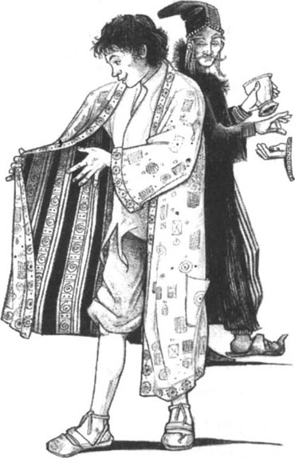
星期五市场关门以后，阿巴那扎尔就带着阿拉丁去了城里那座美丽的公园。他们在树下散步，讨论着为阿拉丁开店铺的事。
“你对我真是太好了，叔叔。”阿拉丁说道。
阿巴那扎尔露出了微笑。“那当然，”他说，“你是我兄弟的儿子。现在我们去城外的山里吧，那儿有一些美妙的东西，你必须去看看。”
他们离开公园，经过苏丹的宫殿，来到城外的山里。他们走了很长时间，阿拉丁感觉有些累了。
“不太远了，”阿巴那扎尔说，“我们会看到一个美丽的花园——比苏丹王宫里的花园还要漂亮。”
阿巴那扎尔终于停了下来。“我们到了。”他说。
阿拉丁四下里看了看，但山里没有任何花园的影子。“花园在哪儿呢，叔叔？”他问道。
“我们必须先点一堆火。”阿巴那扎尔说。
阿拉丁不明白这是什么意思，但还是为叔叔在地上生了一堆火。然后阿巴那扎尔从一个小盒子里拿出一些药粉撒在火里，闭上眼睛念念有词道：“阿不拉卡达不拉！”
天空立刻暗了下来。火堆里冒出黑烟，火底下的地面裂开了。黑烟散尽后，地面上出现了一块白色的巨石，上面还有一个环。
阿拉丁非常害怕。他拔腿就跑，但阿巴那扎尔一把抓住他的手臂，抡起一掌打在他的头上。
有那么一两分钟，阿拉丁说不出话来，也动弹不得。然后他哭了起来：“你为什么要那样做呢，叔叔？”
“你现在必须是一个男人了，而不是一个孩子。”阿巴那扎尔说，“我是你父亲的兄弟，你必须听我的。不要害怕，你很快就会成为一个富翁。现在，好好听着。”他拉起阿拉丁的手，“只有你能够移开这块石头。用手抓住这个环，同时喊出你和你父亲的名字。”
阿拉丁战战兢兢地抓住那个环。环一点也不热，倒是非常冰冷。“我是阿拉丁，穆斯塔法的儿子。”他说道。巨石很轻易地被移开了，阿拉丁看到地下有一道台阶。
“沿着那些台阶走下去，”阿巴那扎尔说，“穿过四个大屋子。在最后一个房间里有一扇门通向一个花园，园里的一棵树下有一盏油灯。你可以从那些树上摘一些果子，但你必须先找到那盏油灯，并把它带给我。”
“跟我一起下去吧，叔叔！”阿拉丁说。
“不行，只有你能做到这个，我的孩子。”阿巴那扎尔从手上摘下一枚金戒指交给阿拉丁，“这枚戒指具有魔力，能够保护你，”他说，“小心点儿，尽快把灯带给我。”
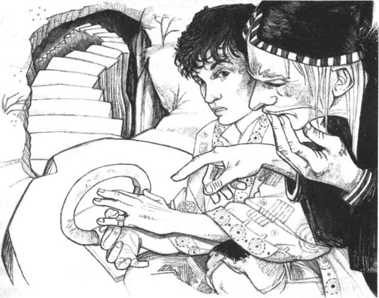
阿拉丁把戒指戴在左手的小指上，沿着台阶走了下去。里面很黑，他很害怕，但他更害怕阿巴那扎尔。
阿拉丁感到害怕是对的，因为阿巴那扎尔并不是他的叔叔。他是一个来自摩洛哥的魔法师，他非常想得到那盏灯。那是一盏神灯，只有这座城市里一个叫阿拉丁的穷孩子才能为他拿到。
阿拉丁下了100级台阶来到第一间屋子里。里面并不暗，他很快穿过那些屋子走进了花园。花园里有很多树，树上满是五颜六色的美丽果子——有白的、红的、绿的，还有黄的。
他很快就在其中的一棵树下找到了那盏灯。“为什么我叔叔想要这盏脏兮兮的破油灯呢？”他寻思。他把它装进口袋里，然后开始从树上摘果子，直到装满了衣服上的每个口袋。之后他返回到台阶那里开始向上爬。他很快就看到了阿巴那扎尔和蓝色的天空。
“把油灯给我，”阿巴那扎尔伸出手催促道，“快点，孩子，给我灯！”
阿拉丁拿不出灯，因为它被压在那些果子下面了。他看着阿巴那扎尔那张恼羞成怒的脸，害怕极了。
“先把我拉出去，你就能拿到那盏灯了，”他说，“求你了，叔叔！”
“先把灯给我！”阿巴那扎尔喊道，“给我灯！”
“不！”阿拉丁说。
“你这个没用的东西！你这条狗！你和那盏灯一起留在下面吧！”阿巴那扎尔气冲冲地跑到火边，又往里面撒了些药粉。“阿不拉卡达不拉！”他又念起了咒语。
白色的巨石重又盖住了洞口，阿拉丁此时看不到天空了。他被关在黑暗的地下，出不去了。
3. The ring and the lamp
3
The ring and the lamp
'Uncle Abanazar! Uncle!' Aladdin hit the stone but nothing moved. 'Don't leave me here! Please!'
Aladdin put his ear to the stone, but he could hear nothing. 'I am Aladdin, son of Mustafa,' he said, and listened again. But the stone did not move.
Then Aladdin began to cry. 'What am I going to do?' he thought, and put his head in his hands.
After a time he began to feel hungry, and took some of the fruit out of his pocket. He put some in his mouth, but he could not eat them. 'These are stones, not fruit,' he thought. 'I'm going to die down here.'
For three days and three nights Aladdin sat on the stairs and waited, but no help came. On the third day he remembered Abanazar' s ring on his finger—the ring to protect him. He could not see the ring in the dark so he put his right hand on it...
WHOOSH!
There was a sudden noise, and blue smoke came out of the ring. And then, out of the smoke came a big jinnee.
'I am here, master, I am here,' the jinnee cried. 'I am the slave of the ring. What is your wish?'
Aladdin was very surprised, and very afraid. At first he could not speak, then he said, 'Take me out of here.'
'To hear is to obey,' the jinnee said, and a second later Aladdin was back on the hills under the blue sky.
There was nobody there, and the fire was cold and black. Happily, Aladdin began to walk home.
When he got there, his mother was very happy to see him. 'Oh, Aladdin!' she cried. 'What happened to you? And where is your uncle?'
'Abanazar is not my uncle, Mother. He is a magician and a bad man. He nearly killed me.' Then Aladdin told his mother all about the fire, the magic stone, and the garden under the ground. 'Oh, I am very tired, Mother,' he said. 'I must sleep.'
Aladdin closed his eyes and slept for many hours. The next morning he opened his eyes and said: 'Mother, I'm hungry!'
'My son, I'm sorry,' she said. 'We have no rice or meat in the house. We have nothing. I must sell your new coat and get some rice with the money.'
Then Aladdin remembered the lamp from the garden.
'Wait a minute, Mother,' he said. 'Take this lamp and sell that first.'
'That dirty old thing?' Aladdin's mother said. 'I must clean it first.' She began to rub it and...
WHOOSH! Noise, fire, and red smoke came from the lamp, and out of the smoke came a very big jinnee.
'I am the slave of the lamp,' cried the jinnee. 'What is your wish, mistress?'
Aladdin's mother was afraid and could not speak, but Aladdin said, 'Bring rice and meat to us. We are hungry.'
The jinnee went away, and came back in a second with rice, meat, bread, and fruit on twelve gold plates. He put the plates in front of them and went away.
Aladdin and his mother ate and ate. Then Aladdin took one of the plates to the market and sold it for two pieces of gold.
Every day after that, Aladdin rubbed the lamp. And when the jinnee came, Aladdin said: 'Bring us rice and meat.' And every day he sold the gold plates.
Soon, Aladdin and his mother were rich.
remember vt. recall to one's memory. 回想起。
jinnee n. (in Mustlim mythology) spirit with supernatural power which is able to appear in human and animal forms. 穆斯林神话中的精灵，能变成人形和动物。
wait a minute wait for a short time. 稍等片刻。
rub vt. press against (a surface) with a to-and-fro sliding movement. 擦，磨。
noise n. sound, esp. when it is loud, unpleasant, confused or unwanted. 声音；响声；（尤指）噪声，噪音，杂音。
mistress n. woman in a position of authority or control. 有权位的女子；女主人。
sell it for... 卖了……钱。
戒指和灯
3．戒指和灯
“阿巴那扎尔叔叔！叔叔！”阿拉丁无助地敲打着纹丝不动的巨石，“不要把我丢在这里！求求你！”
阿拉丁把耳朵凑在石头上，但什么都听不到。“我是阿拉丁，穆斯塔法的儿子。”他喊道，然后再凑上去听，但石头还是没有动。
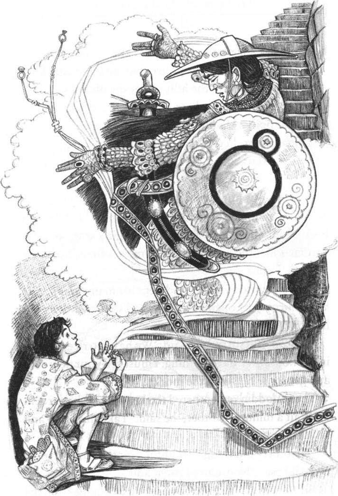
阿拉丁开始哭了。“我该怎么办呢？”他把头埋在两手之中沉思起来。
过了一段时间，他感觉饿了，就从口袋里掏出一些摘来的果子。放进嘴里才发现根本咬不动。“这些东西都是石头，不是果子，”他想，“看来我要死在这下面了。”
阿拉丁坐在台阶上等了三天三夜，但没有人来救他。第三天的时候他想起了手上戴着的阿巴那扎尔给他的戒指——能够保护他的戒指。黑暗中他看不到戒指，所以他伸出右手去摸……
呼啦！
伴着这突如其来的声音，一股青烟从戒指里冒了出来。随后从烟雾里现出一个巨型的神灵。
“我来了，主人，我来了，”神灵喊道，“我是这戒指的奴仆。你有什么愿望？”
阿拉丁很惊讶，也很害怕。起初他说不出话来，但最后还是说道：“把我从这里带出去。”
“听到就得遵从。”戒指神说道。阿拉丁刹那间就回到山里的地面上，他又能看到蓝天了。
周围没有人，火堆里黑色的余烬已经冰凉了。阿拉丁高兴地走上了回家的路。
回到家，母亲见到他甭提有多高兴了。“哦，阿拉丁！”她哭道，“到底发生了什么事？你的叔叔呢？”
“阿巴那扎尔不是我的叔叔，妈妈。他是一个黑心的魔法师，他差点害死我。”接着阿拉丁就给母亲讲了火堆、巨石和地下花园的事。“哦，我非常累了，妈妈，”他说，“我得先睡一觉。”
阿拉丁闭上眼睛睡了好久好久。第二天早上他睁开眼睛就说：“妈妈，我好饿！”
“儿子，我很难过，”她说，“咱们家里没有米也没有肉，什么也没有。我必须把你的衣服卖掉去买些米来。”
这时阿拉丁想起了从花园里拿来的灯。
“等一下，妈妈，”他说，“先把这盏灯拿去卖了吧。”
“那个脏兮兮的旧东西？”阿拉丁的母亲说，“我得先把它擦干净。”她开始擦拭……
呼啦！声音、火焰、红色的烟雾同时从油灯里冒了出来，烟雾里现出一个巨大的神灵。
“我是这盏灯的奴仆，”神灵喊道，“你有什么愿望，夫人？”
阿拉丁的母亲吓得说不出话来，这时阿拉丁说：“给我们弄些米和肉来，我们很饿了。”
神灵走开了，转瞬间就用12个金盘子装着米、肉、面包和水果回来了。他把盘子放在他们面前就消失了。
阿拉丁和他母亲大吃了一顿。吃完后阿拉丁就拿着其中的一个盘子到市场上卖了两枚金币。
从那以后，阿拉丁每天都擦拭神灯。等神灵来了以后，阿拉丁就说：“给我们拿米和肉来。”每天他都把金盘子卖掉。
阿拉丁和母亲很快就变得富有起来。
4. Aladdin's love
4
Aladdin's love
Five years later, Aladdin had a shop in the market and three market-sellers worked for him. The sellers liked Aladdin because he was good to them. The market children liked Aladdin too, because he gave them money when he walked past. Everybody liked Aladdin.
Aladdin's mother never called her son a good-for-nothing now. They had a nice house near the gardens and she had many beautiful things. But only Aladdin and his mother knew about the magic lamp and the jinnee.
One day Aladdin heard a noise in the street and stopped to listen. 'The Sultan's daughter is coming,' he heard. 'Princess Badr-al-Budur is coming!'
Six slaves carried the Princess through the streets in a litter, and the people stopped to watch. 'Princess! Princess Badr-al-Budur!' they called.
Aladdin watched when the litter came past him, and he saw the Princess's face. She was beautiful, with big dark eyes — the most beautiful woman in Arabia. The litter went past Aladdin, but for some minutes he did not move. Then he ran home.
'Mother! Mother! I saw the Sultan's daughter, Princess Badr-al-Budur, in the street.' Aladdin's face was white. 'I must have the Princess for my wife!'
'But, Aladdin...' his mother began.
'No "buts", Mother. I love the Princess and I want to marry her. Go to the Sultan and ask for me.'
'Me? Go to the Sultan's palace? No, no, no,' Aladdin's mother said. 'Listen, my son. The daughters of a Sultan do not marry poor boys from the city.'
'But we are not poor now, Mother. And we can give the Sultan something for his daughter. Wait.'
Aladdin went away and got the fruit from the magic garden under the ground. Now, of course, he knew it was not fruit, but white, red, green, and yellow jewels.
'Take these jewels, Mother, on a gold plate,' he said, 'and give them to the Sultan.'
So the next day Aladdin's mother carried a gold plate with many beautiful jewels on it to the Sultan's palace. She went into a long room, but when she saw the Sultan, his Vizier, and all his slaves, she was very afraid. So she waited quietly in the room and spoke to nobody. In the evening she went back home again with the jewels. Aladdin was very angry with her.
'Mother, you must speak to the Sultan,' he said. 'I have no father to do this for me. You must help me—I must marry the Princess. I love her!'
So the next day, and for many days after that, Aladdin's mother went to the palace, but she was always afraid to speak.
In the end, the Sultan saw her and asked his Vizier: 'Who is that woman? Why does she come to the palace every day?'
The Vizier spoke to Aladdin's mother: 'Do you want to speak to the Sultan? Yes? Come with me.'
The Vizier took Aladdin's mother to the Sultan, and she put her head on the ground at his feet.
'Get up, woman. Why do you come here every day?' the Sultan asked. 'Speak, woman.'
'Your Majesty,' Aladdin's mother said quietly, 'I have a son, a good young man. He is called Aladdin. He loves your daughter, Princess Badr-al-Budur. He cannot sleep or eat because of her. He wants to marry her.'
The Sultan laughed. 'What? Marry my daughter? Your son?'
'Your Majesty, these jewels are for you, from my son Aladdin.' And Aladdin's mother put the gold plate with the jewels in front of the Sultan's feet.
Everybody looked at the jewels, and the long room was suddenly very quiet. Then the Sultan spoke.
'These are very beautiful jewels,' he said. 'No man in Arabia has jewels more wonderful than these. Your son is a rich man — a good husband for my daughter.'
The Vizier did not like to hear this, because he wanted the Princess to marry his son.
'Your Majesty,' he said quietly in the Sultan's ear, 'my son is a rich man, too. Give him three months, and he can find better jewels than these.'
'Very well,' said the Sultan. And to Aladdin's mother he said: 'Your son must wait for three months, and then perhaps he can marry my daughter.'
Aladdin's mother went home to tell Aladdin, and the Vizier went away to speak to his son. And every day, for two months, the Vizier's son came to the Sultan and gave him gold, and jewels, and many beautiful things.
For two months Aladdin waited happily, but one day his mother came home from the market and said:
'Oh, Aladdin! Aladdin! The Princess is going to marry the Vizier's son! I heard it in the market. Everybody's talking about it.'
When Aladdin heard this, he was very unhappy. 'What can I do?' he thought. He put his head in his hands and thought for a long time. And when night came, he took out the magic lamp and rubbed it...
WHOOSH! ' What is your wish, master?' said the jinnee of the lamp.
'Bring Princess Badr-al-Budur to me,' said Aladdin.
'To hear is to obey.'
In a second the jinnee was back with the Princess asleep in his arms. He put her carefully on a bed, and then the Princess opened her eyes and saw Aladdin.
'Who are you?' she asked, afraid.
Aladdin took her hand and looked into her eyes. 'My name is Aladdin, and I love you,' he answered. 'I cannot live without you, and I want to marry you.'
Badr-al-Budur saw the love in his eyes, and smiled.
She closed her eyes again, then the jinnee carried her back to the Sultan's palace. The next morning she remembered Aladdin's eyes. 'There is no love in the eyes of the Vizier's son,' she thought. 'He thinks only of gold and of jewels.' So the Princess went to her father.
'I do not want to marry the Vizier's son,' she said. 'I want Aladdin for my husband.'
The Sultan was very surprised. 'What can we do?' he said to his Vizier. 'My daughter wants to marry this man Aladdin. He is a rich man, it is true — but who is he?'
'Ask him,' said the Vizier quickly, 'for more of those beautiful jewels, on forty gold plates. And forty slave girls, with forty slaves. Nobody is that rich.'
'Very good,' smiled the Sultan, and said to his slaves: 'Bring Aladdin's mother to me.'
When Aiaddin's mother arrived, the Sultan said: 'So! Your son wants to marry my daughter. But first he must give me forty gold plates with jewels. Forty slave-girls, with forty slaves, must carry the plates to me. Then my daughter can be his wife.'
Aladdin's mother went home and told her son, and Aladdin smiled. This was easy for the jinnee of the lamp, of course, and the next day, when Aladdin went to the palace, everybody in the city came out to watch.
First came forty slave-girls in dresses of gold, and every girl carried a gold plate with wonderful jewels on it. After them walked forty slaves in coats of gold. And last came Aladdin, on a beautiful white horse.
'What do you say now?' the Sultan said quietly to the Vizier, when he saw all these wonderful things. 'Aladdin must marry my daughter. How can I say no?' And the Sultan went to Aladdin and took his hands. 'My son,' he said. 'You can marry my daughter tonight.'
'Tomorrow, Your Majesty,' said Aladdin. 'Because, before I marry your daughter, she must have a palace—the most beautiful palace in Arabia.'
The jinnee of the lamp worked all night, and the next morning the Sultan saw from his window a beautiful new palace, with gardens of fruit trees and flowers.
'Wonderful!' he said.
'Black magic!' said the Vizier quietly.
That night Aladdin married Badr-al-Budur and they lived happily in the new palace.
walk past 走过，经过。
know about have knowledge of sth.; be aware of sth. 了解或知道某事物。
princess n. the daughter of the sovereign. 公主。
litter n. couch carried on men's shoulders as means of transport. 轿子。
run home run to one's home. 跑回家。
jewel n. precious stone. 宝石。
Vizier n. high official in some Muslim countries. 伊斯兰国家的高官或大臣。
be angry with filled with anger. 生气的；愤怒的；发怒的。
Your Majesty address or speak of the emperor. 陛下。
in front of in a position further forward than but close to (sb./sth.). 在（某人/某物）前面。
in one's ear very close to one's ear. 在（某人）耳边。
speak to have a conversation with. 交谈，对……说话。
in a second in a very short time. 很快。
asleep adj. not awake; sleeping. 睡着的；睡熟的。
think only of... 只想着……
dress n. garment for a woman or girl. 女装。
quietly adv. with little sound. 轻声地，悄声地。
black magic n. magic supposed to invoke evil spirits. 巫术；妖术。
阿拉丁的爱情
4．阿拉丁的爱情
五年以后，阿拉丁在市场上开了一家店，有三个伙计为他干活。他们都喜欢阿拉丁，因为他对他们很好。市场里的孩子们也都喜欢阿拉丁，因为他走过的时候就会给他们钱。每个人都喜欢阿拉丁。
现在阿拉丁的母亲再也不说儿子没用了。他们在公园附近有一处很好的房子，阿拉丁的母亲也有了不少漂亮的家什。但只有阿拉丁和他母亲知道神灯和神灵的事。
一天，阿拉丁在街上听到一阵嘈杂声，于是停住脚步细听。“苏丹的女儿过来了，”他听到有人说，“白狄伦·布杜鲁公主过来了！”
6个仆人用轿子抬着公主从街道上走过，人们都驻足观望。“公主！白狄伦·布杜鲁公主！”他们欢呼道。
当轿子经过他身边时，阿拉丁看到了公主的脸。她很漂亮，眼睛又大又黑——她是阿拉伯最漂亮的女子。轿子过去好一会儿了，阿拉丁还是待在那儿没有动。然后他就飞奔回家。
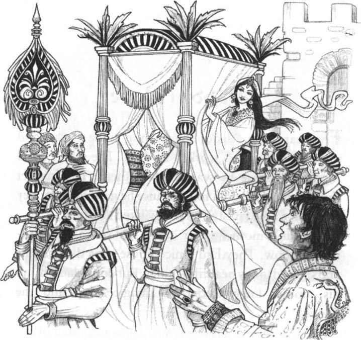
“妈妈！妈妈！我在街上看到苏丹的女儿白狄伦·布杜鲁公主了。”阿拉丁脸色苍白，“我一定要娶公主为妻！”
“但是，阿拉丁……”他母亲说。
“没有什么'但是'，妈妈。我爱公主，我想娶她。你去苏丹那儿为我求亲吧。”
“我？去苏丹的王宫？不，不，不，”阿拉丁的母亲说，“听着，儿子。苏丹的女儿是不会嫁给穷小子的。”
“但我们现在并不穷，妈妈。我们能给苏丹一些求亲的礼物。等等。”
阿拉丁去把那些在地下花园里摘到的果子拿了出来。现在他当然明白了这些并不是果子，而是白色、红色、绿色和黄色的珠宝。
“用一个金盘子装着这些珠宝，妈妈，”他吩咐道，“去送给苏丹。”
第二天阿拉丁的母亲就托着装满漂亮珠宝的金盘子来到苏丹的宫殿里。她走进一间长长的屋子，可当她看到苏丹、他的大臣和众多的仆从时，害怕极了。所以她就一言不发地等在那里。傍晚时，她又带着珠宝回到了家里。阿拉丁很是生气。
“妈妈，你必须去和苏丹说，”他说道，“我没有父亲来为我做这件事，你必须帮助我——我必须娶到公主。我爱她！”
第二天和以后很多天，阿拉丁的母亲都去了宫里，但她总是不敢说话。
最后，苏丹注意到了她，就问他的大臣：“那个女人是谁？她为什么每天都到宫里来？”
大臣对阿拉丁的母亲说：“你想和苏丹说话吗？想？那就跟我来。”
大臣把阿拉丁的母亲带到苏丹的面前，她俯首贴地拜倒在苏丹的脚前。
“起来吧，老太太。你为什么每天都到这儿来呢？”苏丹问道，“说来听听。”
“陛下，”阿拉丁的母亲低声说道，“我有一个儿子，一个品行很好的年轻人，他叫阿拉丁。他爱上了您的女儿白狄伦·布杜鲁公主。他现在寝食不思，只想娶公主为妻。”
苏丹哈哈大笑起来。“什么？娶我的女儿？你儿子？”
“陛下，这些珠宝是我儿子阿拉丁敬献给您的。”说着，她把装满珠宝的金盘子放在苏丹的脚前。
所有的人都把目光转向了那些珠宝，长长的屋子里顿时静了下来。然后苏丹说话了。
“这些都是非常美丽的珠宝，”他说道，“整个阿拉伯都没有人拥有比这还棒的珠宝。你儿子很富有——会是我女儿的好丈夫。”
大臣听到这个很不高兴，因为他想让公主嫁给他的儿子。
“陛下，”他对苏丹耳语道，“我儿子也很富有。给他三个月的时间，他能找到比这还要好的珠宝。”
“很好，”苏丹点头称是。然后他对阿拉丁的母亲说：“你儿子必须再等三个月，之后他也许就能够娶到我的女儿了。”
阿拉丁的母亲回家把这些告诉了阿拉丁，大臣也回去跟他儿子说了。之后的两个月里，大臣的儿子每天都要去觐见苏丹，献上金银珠宝和许多漂亮的物品。
阿拉丁高兴地等了两个月，但有一天他母亲从市场上回来对他说：
“不好了，阿拉丁！阿拉丁！公主要嫁给大臣的儿子了！我是在市场上听说的，人们都在谈论这件事。”
阿拉丁听了以后变得很郁闷。“我该怎么办呢？”他想。他两手托腮地想了很长时间。晚上他把神灯拿出来擦了擦……
呼啦！“你有什么愿望，主人？”灯神问道。
“把白狄伦·布杜鲁公主带到我这儿来。”阿拉丁说。
“听到就得遵从。”
顷刻间灯神就抱着熟睡的公主回来了。他把公主轻轻地放在床上，这时公主睁开眼睛看到了阿拉丁。
“你是谁？”她恐惧地问道。
阿拉丁拉起公主的手，看着她的眼睛。“我叫阿拉丁，我深爱着你，”他答道，“没有你我活不下去，我想娶你为妻！”
公主从他的眼神里看到了真情，释然地笑了。
她又闭上眼睛，灯神重又把她带回到苏丹的宫里。第二天一早她想起了阿拉丁的眼神。“大臣儿子的眼神里没有真情，”她暗自思忖道，“他只想着金银珠宝。”之后她就去找她的父亲。
“我不想嫁给大臣的儿子，”她说，“我想要阿拉丁做我的丈夫。”
苏丹很惊奇。“我们该怎么办呢？”他对大臣说，“我女儿想嫁给阿拉丁。他很富有，这不假——但他是谁呢？”
“向他要，”大臣很快地回答道，“向他要更多的珠宝，用40个金盘子装着。再要40个婢女和40个奴仆。没有人会那么富有。”
“好主意，”苏丹笑道。然后对他的奴仆们说：“去把阿拉丁的母亲找来。”
阿拉丁的母亲来了以后，苏丹对她说：“听着！你儿子要想娶我的女儿，就必须再给我40盘珠宝，而且必须由40个婢女和40个奴仆送来。之后我的女儿就会成为他的妻子。”
阿拉丁的母亲回到家，把苏丹的要求告诉了他儿子，阿拉丁轻松地一笑。这个要求对于灯神来说当然是太容易了。第二天，当阿拉丁往宫里去的时候，城里所有的人都出来观看。
首先走来的是40个婢女，穿着黄金做成的礼服，每人都托着一个装满了珍稀珠宝的金盘子。在她们的后面是40个奴仆，都穿着用黄金做成的外套。阿拉丁骑着一匹白色的骏马，行进在队伍的最后面。
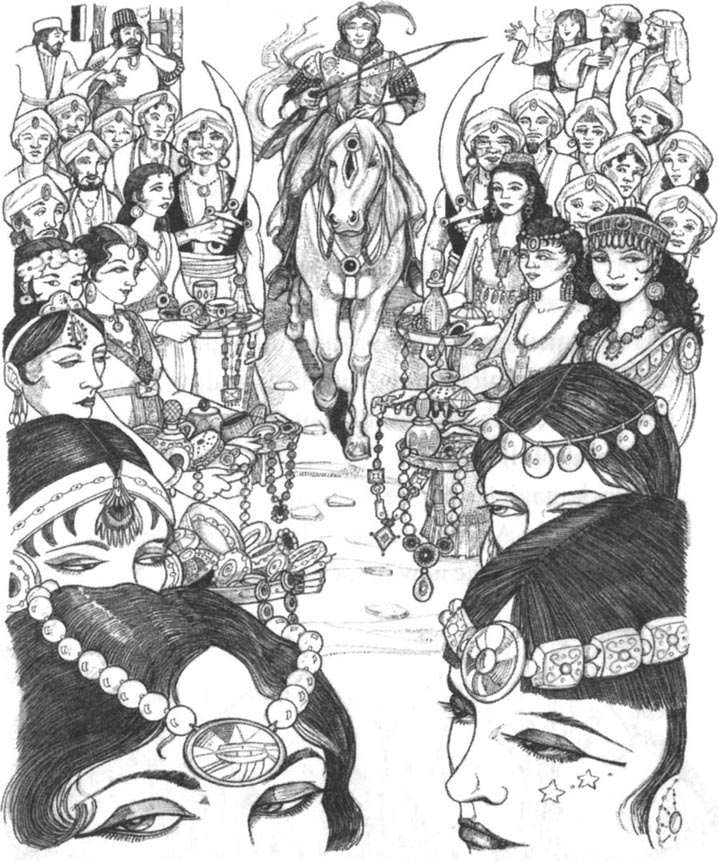
“你还有什么说的呢？”苏丹看到这么多珍稀珠宝后向大臣低声问道，“我女儿必须嫁给阿拉丁。我怎么还能说不行呢？”苏丹走到阿拉丁面前拉起他的双手。“我的孩子，”他说，“你今晚就可以娶我的女儿了。”
“陛下，就改在明天吧，”阿拉丁说，“因为在我迎娶你的女儿之前，她必须拥有一座宫殿——阿拉伯最漂亮的宫殿。”
灯神彻夜忙碌。第二天一早，苏丹就看到窗外建起了一座崭新漂亮的宫殿，周围的花园里栽满了果树和鲜花。
“真是绝妙！”他惊叹道。
“巫术！”大臣低声说道。
当晚阿拉丁就和白狄伦·布杜鲁公主结了婚，他们住在新的宫殿里过着幸福的生活。
5. New lamps for old
5
New lamps for old
Where was Abanazar all this time? When he could not get the lamp from Aladdin, he went home to Morocco. He was very angry with Aladdin. 'But the boy is dead now,' he thought. 'And perhaps next year I can go back and get the lamp.'
One day, he got out his seven black stones. These stones were magic, and when he put them in water, the water could tell him many things. Soon, he could see the magic lamp in the water, but it was not under the white stone in the Arabian hills. It was in a palace.
'How did this happen?' said Abanazar. 'I must go back to Arabia and find this palace.'
After some months he arrived again in the city in Arabia. Soon, he saw the new palace and asked a man in the street: 'Who lives there?'
'That's Aladdin's palace,' was the answer. 'Princess Badr-al-Budur's husband, a good man—and very rich!'
Abanazar said nothing and walked away. 'That lazy, good-for-nothing boy!' he thought angrily. 'So he has the magic lamp, and he knows about the jinnee! How can I get the lamp back?'
For the next week Abanazar watched Aladdin's palace. One day Aladdin and his friends left the palace to go hunting in the hills.
'Good,' Abanazar thought, 'now I can get the lamp.'
After Aladdin left, Princess Badr-al-Budur went into the palace gardens. She sat under a tree and looked at the flowers. Then she heard a noise in the street, and called her slave-girl, Fawzia.
'What's the matter? Who's making that noise?' she asked. 'Fawzia, go and look in the street.'
When Fawzia came back, she had a smile on her face.
'Mistress,' she said, 'the children in the street are laughing at an old man. He's selling lamps, but not for money. "New lamps for old," he cries. "Give me an old lamp, and you can have a new lamp." So everybody's getting new lamps.'
Badr-al-Budur laughed. 'Do we have an old lamp for him? Yes—my husband's old lamp! Go and get it.' The Princess knew nothing about the lamp or its magic.
Fawzia went into the palace and came back with Aladdin's lamp. 'Here it is, mistress,' she said.
'Go and give it to the old man.' The Princess laughed. 'Aladdin can have a nice new lamp!'
Fawzia went out into the street with the lamp. 'New lamps for old,' the old man called, and the children behind him laughed and called, 'New lamps for old.'
The old man (it was Abanazar, of course) saw the lamp in Fawzia's hands, and knew it at once, because of the picture in the water of his magic stones. He took the old lamp, gave a new lamp to Fawzia, and then quickly walked away. He walked out of the city into the hills. Then he took out the lamp and rubbed it...
WHOOSH! At once the jinnee of the lamp came to him. 'I am here, master,' he said. 'What is your wish?'
'Carry Aladdin's palace, the Princess, and me back to Morocco at once,' Abanazar said. 'The Sultan can kill Aladdin for me.'
'To hear is to obey.'
In a second Abanazar, the palace, the gardens, and the Princess were in Morocco. And in front of the Sultan's palace there was now only a little red smoke.
get out draw out; pull out. 拿出，掏出。
go hunting 去打猎。
laugh at show that one is amused by sb./sth. 因某人或某事物而发笑。
know nothing about 对……一无所知。
walk away leave. 走开，离开。
新灯换旧灯
5．新灯换旧灯
阿巴那扎尔这段时间在哪儿呢？他没能从阿拉丁手里得到神灯，之后就返回摩洛哥的家去了。他对阿拉丁恨之入骨。“但那孩子已经死了，”他想，“也许明年我再回去的时候就可以得到那盏灯了。”
一天，他拿出七块黑色的石头，这些石头是有魔力的。他把石头放进水里，可以从水中看到很多东西。很快，他就看到了神灯，但不是在阿拉伯山里的白色巨石下面，而是在一座宫殿里。
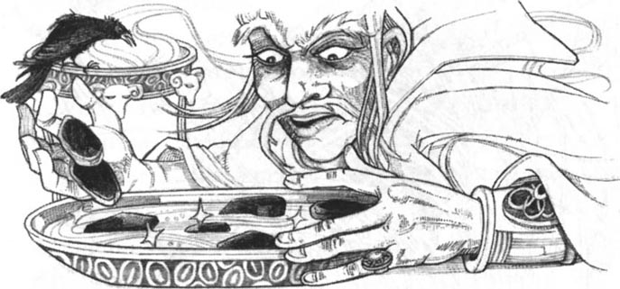
“怎么会这样呢？”阿巴那扎尔自言自语道，“我必须回到阿拉伯，找到这座宫殿。”
几个月之后，他又回到了这个城市。他很快就找到了那座新的宫殿，他问街旁的一个人：“谁住在这座宫殿里呢？”
“那是阿拉丁的宫殿，”那人答道，“白狄伦·布杜鲁公主的丈夫，一个非常好的人，而且很富有！”
阿巴那扎尔一言不发地走开了。“那个懒惰的废物！”他忿忿地想道，“他得到了神灯，他知道了灯神的秘密！我怎样才能把灯夺回来呢？”
接下来的一周阿巴那扎尔都在阿拉丁的宫殿周围观察。一天，阿拉丁离开宫殿和他的朋友们到山里打猎去了。
“好啊，”阿巴那扎尔想，“这下我能够得到那盏灯了。”
阿拉丁走后，白狄伦·布杜鲁公主就去了宫殿的花园里。她坐在一棵树下观赏着鲜花。随后她听到街上传来一阵吵闹声，就把她的婢女法齐娅叫了过来。
“怎么回事啊？是谁在外面大喊大叫的？”她问道，“法齐娅，到街上去看看。”
法齐娅回来后，脸上挂着笑容。
“夫人，”她说，“是一群孩子在笑一个老头儿。他在卖油灯，但不要钱。'新灯换旧灯。'他这样喊道，'给我一个旧灯，你就可以拿走一盏新灯。'所以很多人都换到了新灯。”
白狄伦·布杜鲁公主也大笑了起来。“我们有旧灯换给他吗？对了——我丈夫的旧灯！快去把它拿来。”公主对神灯和它的魔力一无所知。
法齐娅回到宫里把阿拉丁的旧灯拿了出来。“拿来了，夫人。”她说。
“去把它拿给那个老头儿，”公主笑道，“阿拉丁可以有一盏漂亮的新灯了！”
法齐娅拿着灯来到街头。“新灯换旧灯。”老头儿喊道。跟在他后面的孩子们也边笑边喊：“新灯换旧灯。”
老头儿（当然是阿巴那扎尔）一看到法齐娅手中的灯，马上就认出它就是那盏神灯，因为他把魔石扔进水里后在水中看到过这盏灯。他取走旧灯，给了法齐娅一盏新灯后，很快就溜走了。他来到城外的山里，取出灯擦拭了一下……
呼啦！灯神马上来到他面前。“我来了，主人，”他说，“你有什么愿望？”
“马上把阿拉丁的宫殿、公主和我带回摩洛哥。”阿巴那扎尔吩咐道，“苏丹会替我杀了阿拉丁。”
“听到就得遵从。”
顷刻间阿巴那扎尔、宫殿、花园和公主就到了摩洛哥。在苏丹的宫殿前只剩下一缕红色的轻烟。
6. There and back again
6
There and back again
In the evening Aladdin and his friends finished hunting and began to go home. Suddenly a friend said: 'Aladdin, look! The Sultan's men are coming, with swords in their hands. What do they want?'
'I don't know,' Aladdin answered.
When the Sultan's men arrived, they said: 'Aladdin, we must take you to the Sultan. He's very angry.'
'Why?' asked Aladdin, but the men could not tell him.
In his palace the Sultan took Aladdin to a window. 'Where is your palace?' he cried angrily. 'And where is my daughter? Answer me!'
Aladdin looked out of the window. There was only the ground and the sky—no palace, no gardens, nothing. He closed his eyes, opened them and looked again, and he had no answer for the Sultan.
'It's black magic. I always said that,' the Vizier said quietly in the Sultan's ear.
'Your Majesty.' Aladdin put his head at the Sultan's feet. 'Kill me now—I do not want to live without Badr-al-Budur.' There were tears in his eyes.
'Find her in forty days—or you die,' the Sultan said.
'I hear and obey, Your Majesty,' Aladdin answered.
But without his magic lamp, what could Aladdin do? He went out from the city, and looked and looked for his wife and his palace, but of course he did not find them. After thirty seven days he sat by a river and cried: 'Oh, Badr-al-Budur, my love! Where are you? Where can I look now?' He put his hands into the water of the river, and then he saw the magician's ring on his little finger. He began to rub it...
WHOOSH! Out of the blue smoke came the jinnee of the ring. 'What is your wish, master?' he asked.
'Find my wife and bring her back to me,' answered Aladdin. 'Please...'
'Master, I cannot do that. The jinnee of the lamp took the Princess away, and only the jinnee of the lamp can bring her back. But I can take you to her.'
'Take me then—quickly!'
'To hear is to obey.'
It is many, many miles from Arabia to Morocco, but Aladdin was there in a second. And there was his palace, in front of him. He went into the gardens and looked up at the windows.
'Badr-al-Budur,' he cried, 'are you there?'
In the palace Badr-al-Budur heard him. 'Is that Aladdin?' she thought. 'But he is far away in Arabia.' She went to the window, opened it, and looked out.
'Aladdin!' she cried. 'Oh, my love!'
For the first time in many days, Aladdin smiled.
'Come up, quickly!' the Princess called. 'The magician is not here now.'
Her slave-girl ran down and opened a little door into the gardens. Aladdin ran up to the Princess's rooms, and in a second she was in his arms.
'Oh, my love,' the Princess said. 'A bad man carried me here. A magician. His name is—'
'His name is Abanazar and I am going to kill him,' said Aladdin. 'Tell me—does he have my old lamp?'
'Yes,' Badr-al-Budur said. 'He always carries it with him. I know about its magic now, because he told me. Oh, why did I give it away?'
'Listen, my love,' said Aladdin. 'I'm going to give you some sleeping-powder. When he comes here again, you must give him a drink and put the powder in it. When he is asleep, I can kill him. Don't be afraid. I'm going to take you home very soon. Now for some good magic.'
He began to rub his ring...
WHOOSH! 'What is your wish, master?' said the jinnee of the ring.
'Bring me some sleeping-powder,' said Aladdin.
'To hear is to obey.'
In a second the jinnee was back with some sleeping powder. Then Aladdin and the Princess waited for Abanazar.
In the evening they heard him on the stairs.
'Don't be afraid,' Aladdin said quietly to his wife. 'I am in the next room and can be with you in a second.' He went quickly into the next room and stood behind the door.
Abanazar opened the door of Badr-al-Budur's room and came in. He smiled: 'You are more beautiful every day, Badr-al-Budur,' he said. 'Your husband, that good-for-nothing Aladdin, is dead now. You must marry me. You can have gold, jewels, palaces, anything! But you must be my wife.'
For the first time the Princess smiled at Abanazar.
'Why not?' she said. 'You are a rich man and I am happy here. Yes, let's drink to that.'
And she gave him a tall gold cup with the drink and the powder in it.
'Let us drink from one cup, Abanazar,' she said, and smiled at him. 'You first, then me. In my country new husbands and wives always do this.'
'To Badr-al-Budur, the most beautiful woman in Morocco,' Abanazar said happily, 'and my wife.'
He looked into Badr-al-Budur's eyes and began to drink. Very afraid, the Princess watched him. But it was a good sleeping-powder, and after five seconds Abanazar's eyes closed and he was asleep.
The Princess ran to the door of the next room.
'Quick, Aladdin,' she called.
Aladdin ran in with his sword and saw the sleeping magician. 'Well done, my love!' he said. 'Now, go into the next room and do not watch.'
Badr-al-Budur ran to the next room and closed the door. Aladdin put his hand in Abanazar's pocket and took out the lamp. He put it carefully into the pocket of his coat, and then stood up.
The sword did its work quickly, and Abanazar never opened his eyes again.
The Princess came back into the room, and ran to Aladdin. He took her in his arms.
'The magician is dead,' he said. 'And now we can go home.' He began to rub the lamp...
WHOOSH! Fire and red smoke came from the lamp. The Princess watched, afraid.
'I am here, master,' said the jinnee of the lamp. 'What is your wish?'
'Carry this palace, Badr-al-Budur, and me back to our city in Arabia. But leave that dog, Abanazar, here.'
'To hear is to obey,' said the jinnee.
* * *
When the Sultan looked out of his window and saw Aladdin's palace again, he was a happy man. And when he took his daughter in his arms, he was the happiest man in Arabia.
From that day, Aladdin and Badr-al-Budur lived happily in their palace. They lived for many years, and had many children. But Aladdin always carried the magic lamp with him, day and night.
love n. beloved one; sweet heart. 爱人，恋人。
look up raise one's eyes. 仰望，仰视。
in one's arms be embraced by. 在……的怀抱里。
give... away give sth. free of charge. 送出。
sleeping-powder n. powder containing a drug that helps sb. to sleep. 安眠药粉。
drink n. portion of alcoholic liquor. 一份酒（一杯酒等）。
next room the nearest room. 隔壁。
smile at give a smile or smiles to. 对……微笑。
well done expressing praise for sth. done. 干得好。
carry vt. have (sth.) with one. 持有，带着。
day and night all the time. 日日夜夜。
去摩洛哥找回失去的
6．去摩洛哥找回失去的
傍晚时分，阿拉丁和他的朋友们打完猎正往回走。突然一个朋友喊道：“阿拉丁，快看！苏丹的武士们来了，手里都拿着刀剑。他们想干什么？”
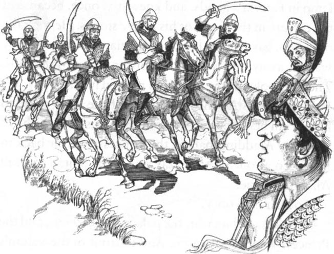
“我不知道啊。”阿拉丁答道。
武士们走近之后，说道：“阿拉丁，我们必须把你带到苏丹那里，他非常生气。”
“为什么？”阿拉丁诧异道，但武士们也回答不上来。
在王宫里，苏丹把阿拉丁带到窗前。“你的宫殿到哪儿去了？”他愤怒地喊道，“我的女儿到哪儿去了？赶快回答我！”
阿拉丁向窗外望去。他只能看到地面和天空——没有宫殿、没有花园，什么都没有。他使劲眨了眨眼睛再看，还是没有。对苏丹他无言以对。
“那是巫术。我一直是这么说的。”大臣对苏丹耳语道。
“陛下，”阿拉丁俯在苏丹的脚前，“现在就杀了我吧——没有白狄伦·布杜鲁公主我也不想活了！”他的眼里噙满了泪水。
“限你在40天之内找到她——不然你就死定了。”苏丹说。
“遵命，陛下。”阿拉丁答道。
但没有神灯，阿拉丁能做什么呢？他出了城找啊找啊，找她的妻子和宫殿，但他当然是找不到。37天过去了，他坐在一条河边无助地哭喊道：“哦，白狄伦·布杜鲁公主啊，我的至爱！你在哪儿呢？让我到哪儿去找你呢？”他说着把手伸进了河水里，这时他看到了小指上魔法师给的戒指。他连忙伸手去擦拭……
呼啦！戒指神从蓝色的烟雾里现了出来。“你有什么愿望，主人？”他问道。
“找到我妻子并把她带回来，”阿拉丁答道，“求你了……”
“主人，我做不到。是灯神把公主带走的，也只有灯神能够把她带回来。不过我可以把你带到公主那儿去。”
“那就带我去——赶快！”
“听到就得遵从。”
从阿拉伯到摩洛哥相隔千山万水，但阿拉丁刹那之间就到了。他的宫殿就在他面前。他走进花园里，抬头往窗户里看去。
“白狄伦·布杜鲁，”他喊道，“你在那儿吗？”
正在里面的公主听到了他的声音。“是阿拉丁吗？”她想，“可他在遥远的阿拉伯啊。”她走到窗前，打开窗户向外看去。
“阿拉丁！”她叫了起来，“哦，亲爱的！”
这么多天来，阿拉丁第一次露出了笑容。
“快上来！”公主喊道，“魔法师现在不在这儿。”
她的婢女跑下去打开了通往花园的一扇小门。阿拉丁跑到公主的房间里，公主马上扑到了他的怀里。
“哦，我心爱的，”公主说道，“一个坏蛋把我带到了这里。他是个魔法师，名字叫——”
“他叫阿巴那扎尔，我要宰了他。”阿拉丁说，“告诉我——他拿了我的旧油灯了吗？”
“是的，”公主答道，“他总是把它带在身边。我现在知道它具有魔力了，因为魔法师跟我说了。天呐，我为什么要把它送给别人呢？”
“听着，亲爱的，”阿拉丁说，“我要给你一些催眠药粉。他回来以后，你必须向他敬一杯酒，并且把药粉放在里面。等他睡熟后，我就能杀死他了。千万别害怕。我很快就会带你回家。现在我来使一个小魔法。”
他伸手去擦拭戒指……
呼啦！“你有什么愿望，主人？”戒指神问道。
“给我找些催眠药粉来。”阿拉丁说。
“听到就得遵从。”
很快，戒指神就弄来一些催眠药粉。阿拉丁和公主一起等着阿巴那扎尔的归来。
傍晚时分，他们终于听到了他上楼梯的声音。
“不要害怕，”阿拉丁悄声地对妻子说，“我就在隔壁的房间里，随时可以过来帮助你。”他很快地躲到隔壁房间的门后。
阿巴那扎尔打开白狄伦·布杜鲁公主的房门走了进来。他谄笑道：“你一天比一天漂亮了，白狄伦·布杜鲁公主。你的丈夫，那个叫阿拉丁的废物已经死了。你必须嫁给我。你可以拥有金银、珠宝、宫殿，所有的一切！但你必须做我的妻子。”
公主第一次对阿巴那扎尔露出了笑容。
“为什么不呢？”她欣然说道，“你很富有，我在这儿也很高兴。好，那就让我们为这个喝一杯吧。”
她递给他一个高脚金杯，里面盛着掺了药粉的酒。
“我们就用一个杯子喝吧，阿巴那扎尔，”她对他微笑道，“你先喝，我后喝。在我们国家，新婚夫妇都是这样做的。”
“为白狄伦·布杜鲁，摩洛哥最漂亮的女人，”阿巴那扎尔高兴地说，“我的妻子。”
他看着白狄伦·布杜鲁的眼睛，开始饮酒。公主也看着他，心里害怕极了。但催眠药粉的效果非常好，五秒钟之后阿巴那扎尔就闭上眼睛睡熟了。
公主跑到隔壁的门口。
“快，阿拉丁！”她喊道。
阿拉丁提着剑跑进屋里，看到了熟睡的魔法师。“好样的，亲爱的！”他说，“现在你到隔壁去，别看着。”
公主跑到隔壁把门关上。阿拉丁把手伸进阿巴那扎尔的口袋里，掏出了神灯，然后小心地把它放进自己的外衣口袋里，站了起来。
阿拉丁手起剑落，阿巴那扎尔就再也没有睁开眼睛了。
公主跑回房间里，扑向阿拉丁。他把她紧紧地抱在怀里。
“魔法师死了，”他说，“现在我们回家。”他把神灯拿出来擦拭……
呼啦！火光和红色的烟雾从灯里冒了出来。公主很害怕地看着。
“我来了，主人，”灯神说道，“你有什么愿望？”
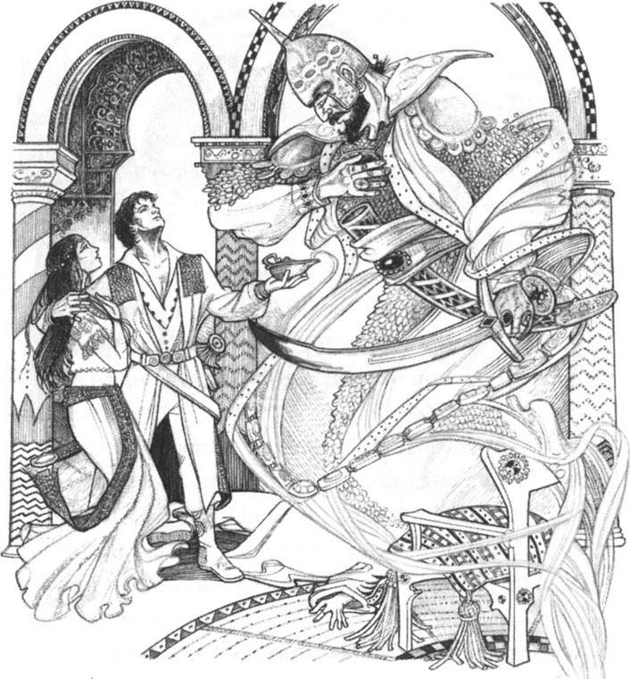
“把这座宫殿、白狄伦·布杜鲁公主，还有我带回阿拉伯我们的城市里，但把阿巴那扎尔这条狗留在这儿。”
“听到就得遵从。”灯神说道。
* * *
苏丹重又看到窗外阿拉丁的宫殿时，很是高兴。拥抱着女儿时，他就是整个阿拉伯最幸福的人了。
从那天起，阿拉丁就和白狄伦·布杜鲁公主幸福地生活在他们的宫殿里。他们活了很多年，有了很多孩子。但阿拉丁日夜都把神灯带在身边。
ACTIVITIES: Before Reading
ACTIVITIES
Before Reading
1. Read the story introduction of the book. How much do you know now about the story? Tick one box for each sentence.
1) Aladdin works all day in the market.
YES □／NO □
2) Abanazar comes to the city to find Aladdin.
YES □／NO □
3) Abanazar is Aladdin's uncle.
YES □／NO □
4) Aladdin can get into the magical garden, but Abanazar can't.
YES □／NO □
5) Abanazar wants to find gold and jewels.
YES □／NO □
6) There is a magical jinnee in the old lamp.
YES □／NO □
7) Aladdin is poor all his life.
YES □／NO □
2. What happens in this story? Can you guess? Choose words to complete these sentences.
1) Aladdin finds/doesn't find the lamp in the garden.
2) Aladdin gives/doesn't give the lamp to Abanazar.
3) Aladdin marries/doesn't marry the Princess.
4) Abanazar takes the Princess/Aladdin to Morocco.
5) Abanazar wants to kill/marry the Princess.
6) In the end the jinnee/Aladdin kills Abanazar.
7) The story has an unhappy/a happy ending.
ACTIVITIES: While Reading
ACTIVITIES
While Reading
1. Read Chapter 1, and then answer these questions.
1) Why did Aladdin's mother call Aladdin a 'good-for-nothing'?
2) Where did Abanazar find Aladdin?
3) Why did Abanazar cry?
4) Why was Aladdin surprised?
5) What did Abanazar give to Aladdin?
6) Why was Aladdin very happy about this?
7) Who did Abanazar want to help?
2. Read Chapter 2. Choose the best question-word for these questions, and then answer them.
What/Where
1) ... did Abanazar buy for Aladdin in the market?
2) ... did Aladdin and Abanazar go after the city gardens?
3) ... did Abanazar put on the fire?
4) ... could Aladdin see in the ground under the fire?
5) ... did Abanazar want Aladdin to go?
6) ... did Aladdin put Abanazar's ring?
7) ... was the lamp?
8) ... did Aladdin put in every pocket of his coat?
9) ... did Abanazar leave Aladdin and the lamp?
3. Before you read Chapter 3, can you guess what happens? Choose endings for these sentences.
1) Aladdin stays under the ground for...
(a) three hours (b) three days (c) three weeks
2) Aladdin sees his first jinnee. It comes out of...
(a) the old lamp (b) the white stone (c) Abanazar's ring
4. Read Chapter 3. Complete these sentences with words from the chapter (one word for each gap) .
1) The jinnee of the ______ said, 'To hear is to _____.'
2) The second jinnee said, 'I am the ______ of the ____.'
3) Every day Aladdin _____ the lamp, and the jinnee came.
4) Aladdin _______ the gold _____ in the market.
5) Soon, Aladdin and his mother were _______.
5. Read Chapter 4. Who said this, and to whom?
1) 'I must have the Princess for my wife!'
2) 'He cannot eat or sleep because of her.'
3) 'These are very beautiful jewels.'
4) 'My son is a rich man, too.'
5) 'The Princess is going to marry the Vizier's son!'
6) 'Bring Princess Badr-al-Budur to me.'
7) 'I do not want to marry the Vizier's son.'
8) 'But first he must give me forty gold plates with jewels.'
9) 'Black magic!'
6. Before you read Chapter 5, can you guess what happens next? Tick one box for each sentence.
1) The Vizier finds the magic lamp and takes it.
YES □／NO □
2) Abanazar comes back to Arabia.
YES □／NO □
3) The Princess gives the lamp to Abanazar.
YES □／NO □
4) Abanazar takes Aladdin to Morocco.
YES □／NO □
7. Read Chapters 5 and 6. Then join these halves of sentences.
1) When Abanazar saw the lamp in the magic water,...
2) One day he walked in the streets by the palace...
3) Badr-al-Budur did not know about the jinnee...
4) Abanazar rubbed the lamp . . .
5) The Sultan was very angry with Aladdin...
6) The jinnee of the ring carried Aladdin to Morocco...
7) When Abanazar came to see the Princess,...
8) Then Aladdin came in and killed Abanazar...
9) but he gave him forty days to find the Princesss.
10) and he and the Princess went home to Arabia.
11) he went back to the city in Arabia.
12) and the jinnee took him and the Princess to Morocco.
13) she put some sleeping-powder in his drink.
14) and called out, 'New lamps for old. New lamps for old.'
15) so she gave Aladdin's old lamp to Abanazar.
16) and he found his wife and his palace there.
ACTIVITIES: After Reading
ACTIVITIES
After Reading
1. There are 21 words from the story hidden in this word search. Can you find them? The words go from left to right, and from top to bottom.
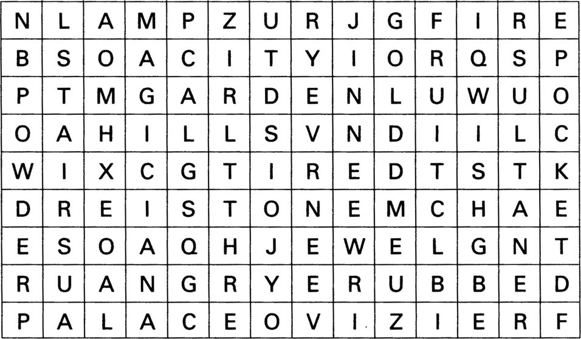
2. What did Aladdin tell his mother when he got home from the hills? Complete the passage with 15 of the words from the word search above. (One word for each gap.)
'In the _________ there is a beautiful _________ under the ground. Abanazar knew about it because he is a ______, and he wanted me to find a _______ under one of the trees. I found it and put it in my ________, with some _______ from the trees. But when I came back up the ______, Abanazar was_______ with me, so I didn't give him the lamp. Then he put more _______ on the _________, and the magic white ____ moved again and I could not get out. In the end I remembered Abanazar's ____ ring. When I _____ it, a big _______ came out and put me back on the hill. Then I walked home. Oh, Mother, I'm so __________ —I must sleep now.'
3. What did the Vizier say to his son when he went home? Put their conversation in the right order, and write in the speakers' names. The Vizier speaks first ( number 3) .
1) _______'Yes, he does, but he's looking for a rich husband for his daughter. And Aladdin is very, very rich.'
2) _______'And what must I do in these three months?'
3) _______'My son, do you know a man called Aladdin?'
4) _______'But he can't! I'm going to marry Badr-al Budur! And the Sultan knows that.'
5) _______'Go to the Sultan every day, my son. And give him gold, and jewels, and many beautiful things.'
6) ________'Then we must find some better jewels, Father.'
7) ________'I don't know, but he loves the Princess and he wants to marry her. '
8) ________'Is he? How do you know that, Father?'
9) ________'Yes, we must. The Sultan is giving us three months before he says yes to Aladdin. '
10) _______'No, I don't. Who is he?'
11) _______'Because today his mother gave the Sultan some beautiful jewels. The Sultan liked them very much.'
4. Here is a new illustration for the story. Find the best place in the story to put the picture, and answer these questions.
The picture goes in Chapter _____.
1) Who are the three men in the picture?
2) What can they see out of the window?
3) Where is Princess Badr-al-Budur at this moment?
Now write a caption for the illustration.
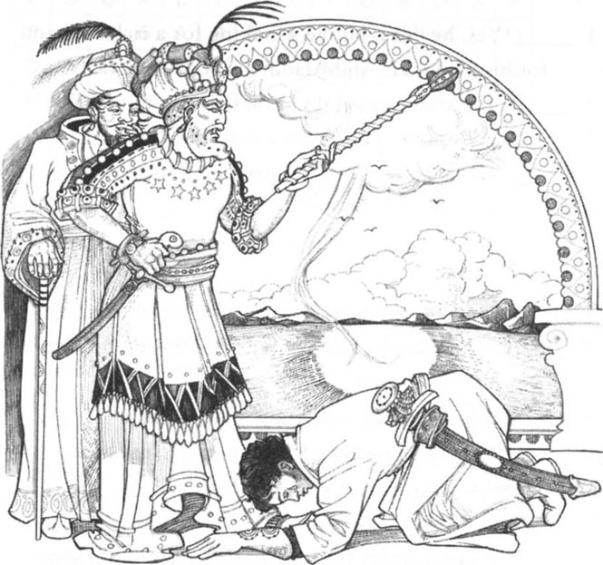
Caption: _________________________
5. Here is Aladdin's mother, talking about her son, but she says some untrue things. Can you correct them?
'No, I never called Aladdin a good-for-nothing when he was young! He was always a hard-working boy, and he liked to work. He never wanted to play. Now he has five shops, and twenty market-sellers work for him. We live in a palace, and soon Aladdin is going to marry the Vizier's daughter!'
6. There are a lot of magic things in this story. What did they do? Use this list to complete the sentences below.
the jinnee of the lamp the seven magic black stones
the jinnee of the ring the magic word 'Abracadabra'
the magic trees
1) _______ brought food every day on gold plates.
2) Abanazar said ______, and the ground opened.
3) _______ built Aladdin a beautiful palace.
4) _______ took Aladdin to Morocco.
5) When Abanazar put ________ in water, the water told him many things from far away.
6) _______ took the Princess to Morocco.
7) There were jewels, not fruit, on _______ in the garden under the ground.
8) _______ brought Aladdin some sleeping-powder.
9) _______ carried the Princess to Aladdin one night.
Which of these magic things would you like? Why?
封底
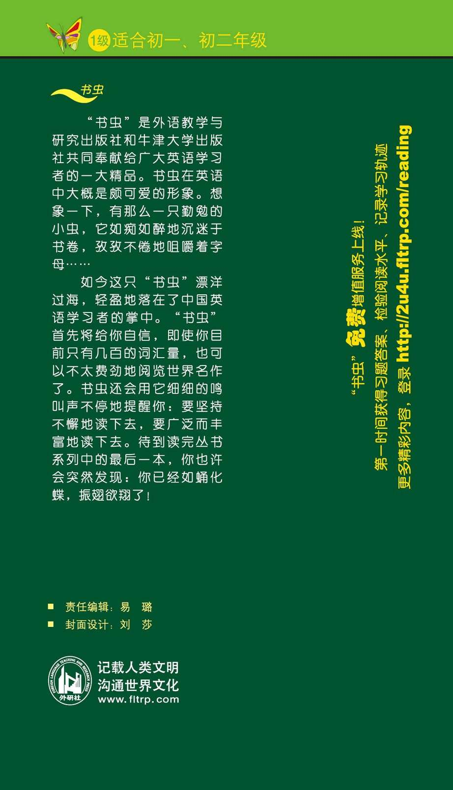